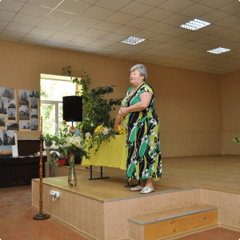
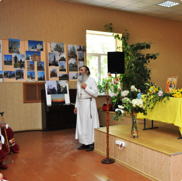

<section id="media" class="media">
    <div class="page__container media__container">
        <div class="media__title">
            <h3 class="subtitle">Фотографии</h3>
            <h2 class="title">Галерея Храма</h2>
        </div>
        <div class="media__arrows">
            <div class="swiper-button-prev arrow "></div>
            <div class="swiper-button-next arrow "></div>
        </div>
    </div>

    <div class="swiper gallery">
        <div class="swiper-wrapper">
            
            
            
            
            
            
            
        </div>

    </div>

</section>